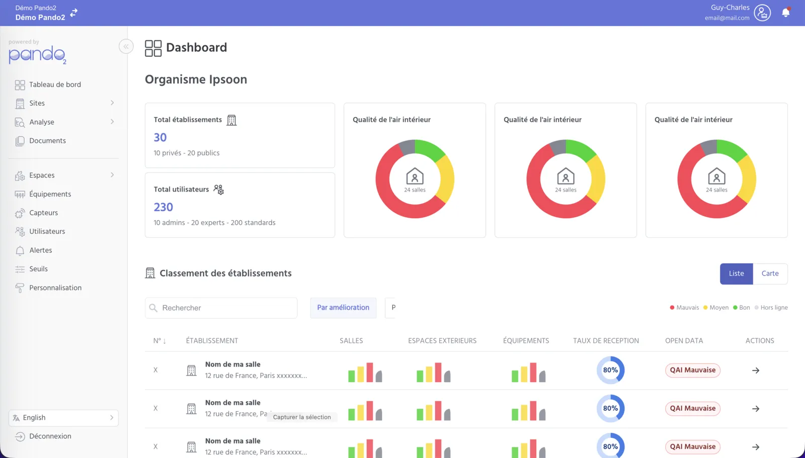
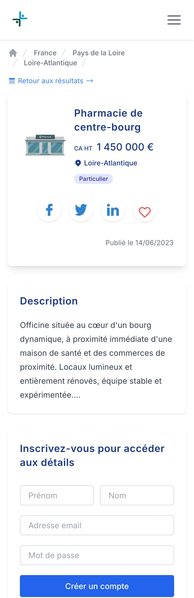
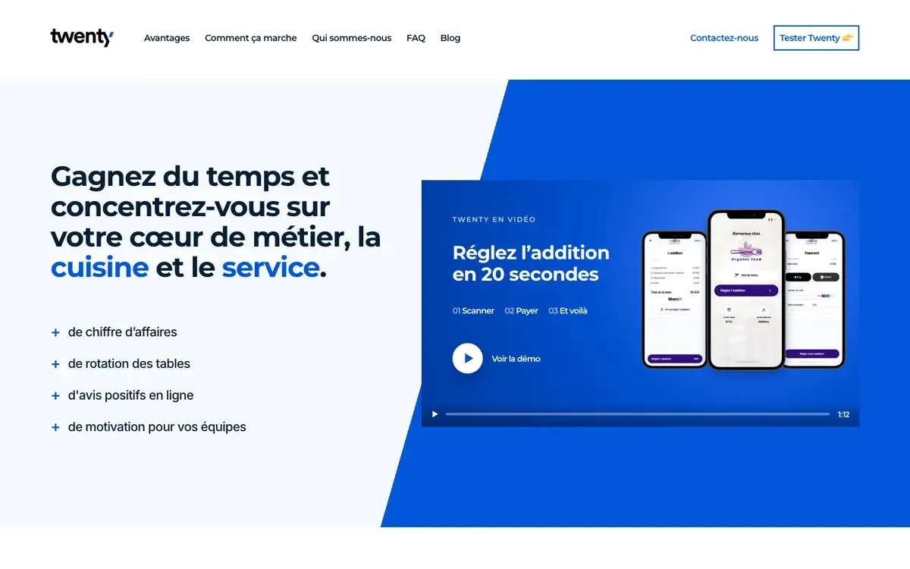
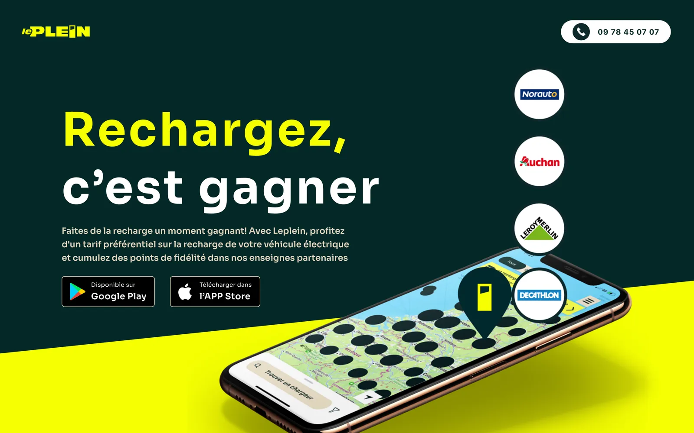

Jessica Thielemans
Frontend developer with more than five years of experience in web development.
Frontend developer in Seoul, at Infinique.
Frontend developer with more than five years of experience in web development.
Frontend developer in Seoul, at Infinique.
A photo editor with AI tools (portrait retouching, pose, colors), on the web, on desktop and on mobile.


Interfaces for a building management software (SaaS) that monitors air quality (including CO2 levels) and energy use.


Gradual redesign of the frontend of a pharmacy marketplace: pharmacies for sale, job offers and content for pharmacists.


Showcase website for Nomiks, a blockchain consulting and investment company: a home page and two pages for its services, in English and French.


Three products for the same client: a site to create a CV, an app to pay the bill at a restaurant, and a service to cancel subscriptions.


A new style for the Otoctone website, a collection of exceptional places to stay (a villa on Lake Geneva, a chalet on Mont Blanc, a house in Costa Rica…).


Website for Le Plein, a network of charging stations for electric cars installed in the parking lots of partner retailers, with a loyalty program.


An app for learning to invest without risk: virtual portfolios, a community of investors, and company news.


Every project in detail, in English, French and Korean, at jessica-thielemans.com.